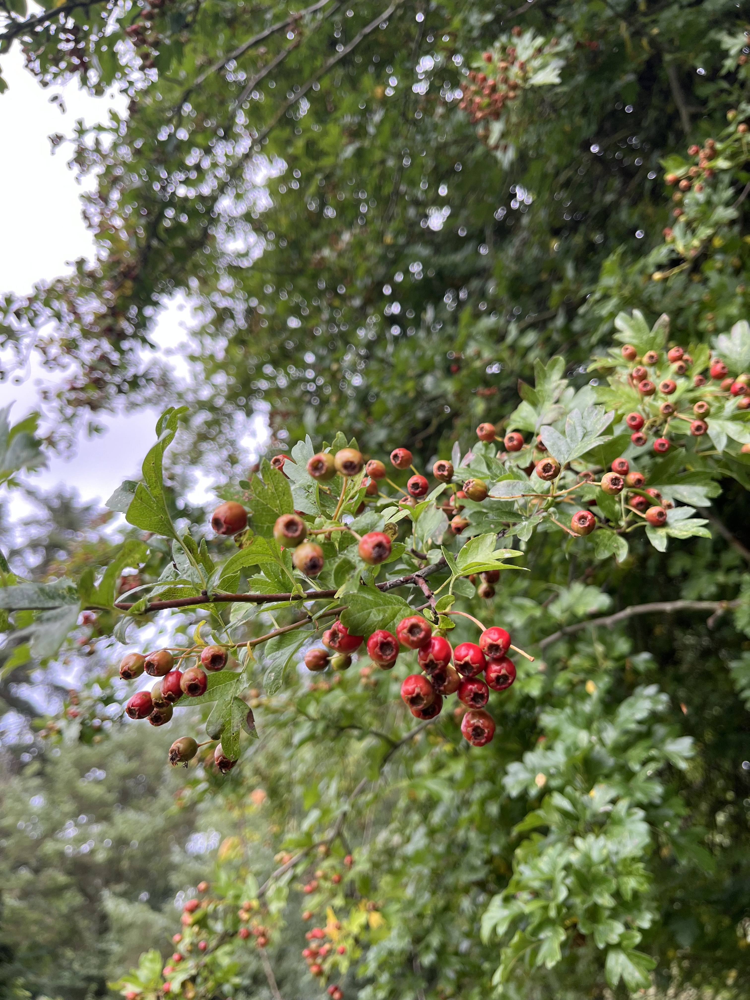
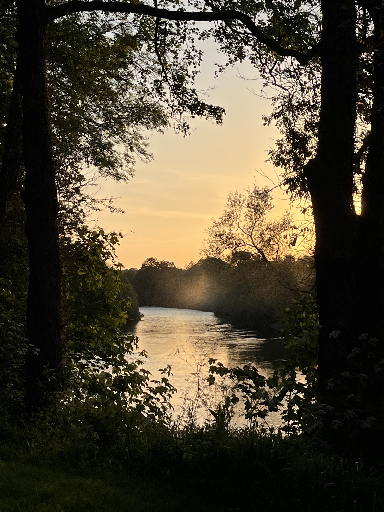

Wild hawthorn berries steeped in raw Irish cider vinegar. Bright and floral with a soft, tannic finish — a splash lifts dressings, marinades, roast vegetables and game.
Available 2026 — join the list
Kingfisher House is a small Irish maker working with the fruit of the hedgerow. Our first release is a hawthorn vinegar — bright, floral and gently tannic — made from berries picked along the River Blackwater. We're not selling just yet. Leave your email and you'll be the first to know when the first bottles are ready.


Wild hawthorn berries steeped in raw Irish cider vinegar. Bright and floral with a soft, tannic finish — a splash lifts dressings, marinades, roast vegetables and game.
Available 2026 — join the list

A drinking vinegar made from the simmered fruit and balanced with a little sweetness. Mix with sparkling water for a refreshing cordial, or use it as the base of an alcohol-free spritz.
Available 2026 — join the list

We're slowly exploring what else the Irish hedgerow gives — sloes, elderberries, crab apples and more. New small-batch releases will follow, one season at a time.
Following soon
Last autumn, the hedgerows around us were heavy — hawthorn, sloes and apples in a kind of abundance you don't see every year. Rather than let it go to waste, we started experimenting, digging through eighteenth-century cookbooks and old recipes to understand what people once did with this fruit.
One of those experiments was meant to be hawthorn ketchup. Along the way we found something better: steeping the cooked berries in vinegar made a beautifully floral vinegar, and the simmering liquor made a shrub. Both tasted of the hedgerow itself.
Hawthorn runs deep through Irish folklore as the lone "fairy tree," left standing in fields out of respect. It felt fitting that it gave us our first two products.
Small batches, gathered and made by hand, with nothing added that the hedgerow didn't give.
We make everything at Ballymacmoy, on the wooded banks of the River Blackwater in north Cork — a quiet, storied corner of Ireland we think deserves to be better known. It was from this very townland that Richard Hennessy set out in the 1740s, later founding the cognac house that still bears his name. The same river valley and hedgerows that shaped that story still shape ours.


We're not selling yet. Leave your email and we'll let you know when the first hawthorn vinegar is bottled.